FIG. 001
↗
FIG. 001
↗
01 — SELECTED WORKS
THE
ARCHIVE.
我愛畫畫
畫畫不愛我。
FIG. 001
↗
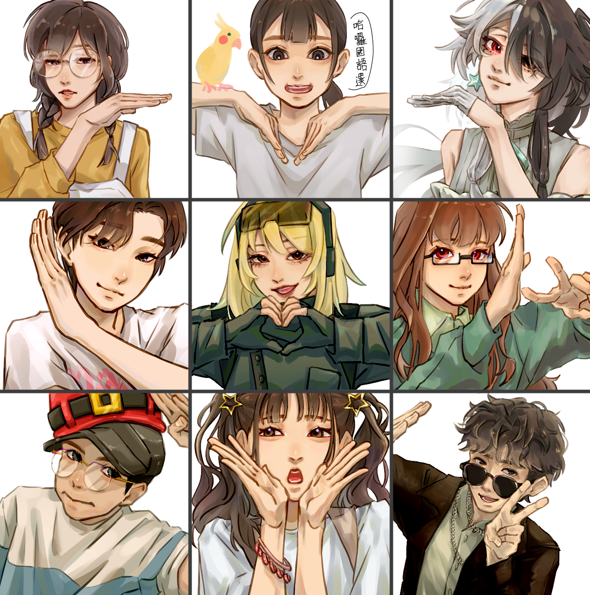
FIG. 002↗ FIG. 003↗
FIG. 003↗
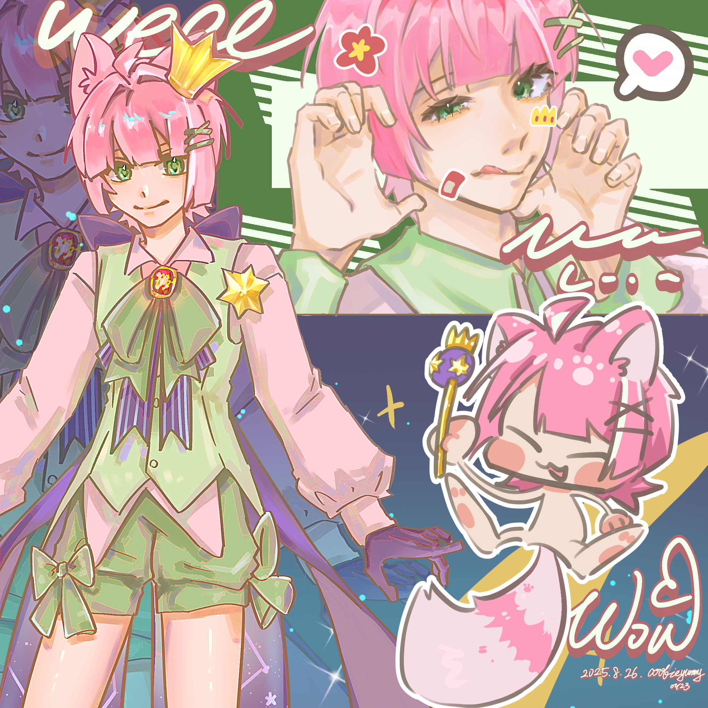
FIG. 006↗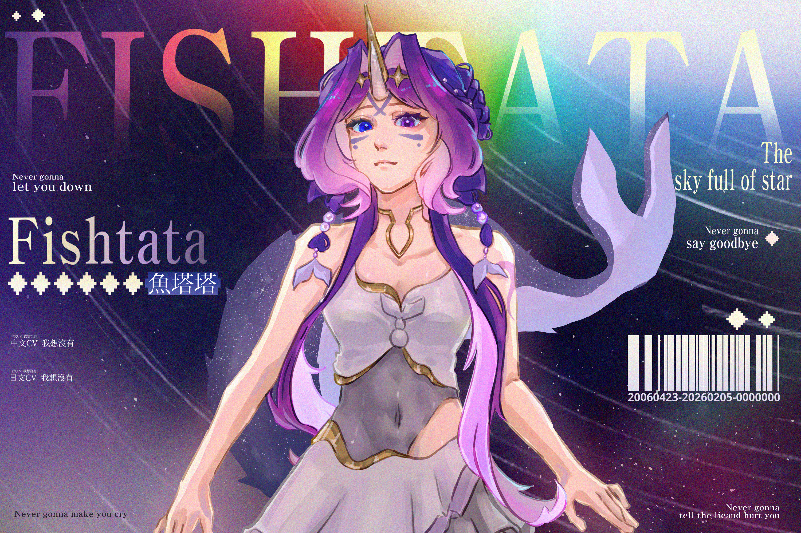
FIG. 007↗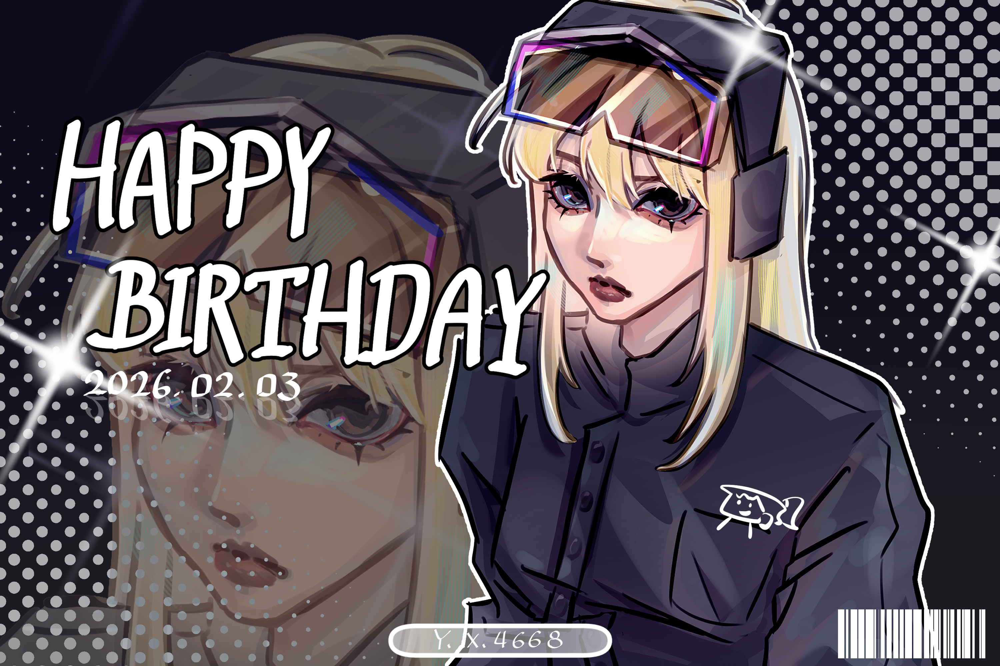
FIG. 008↗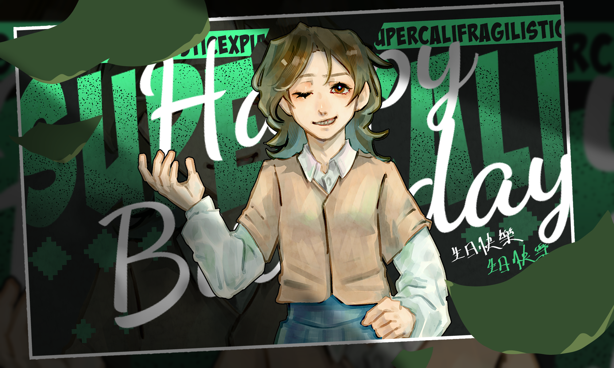
FIG. 009↗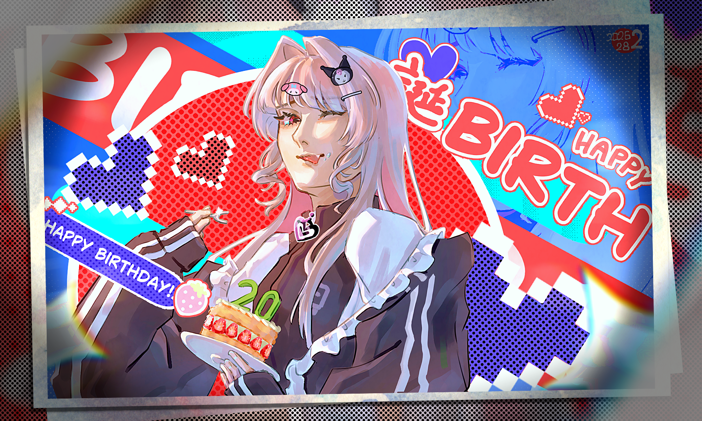
FIG. 014↗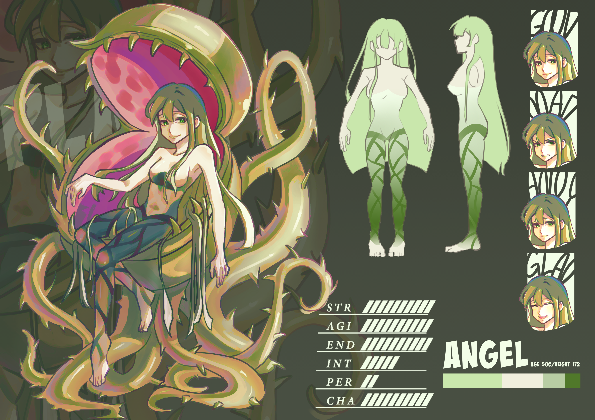
FIG. 019↗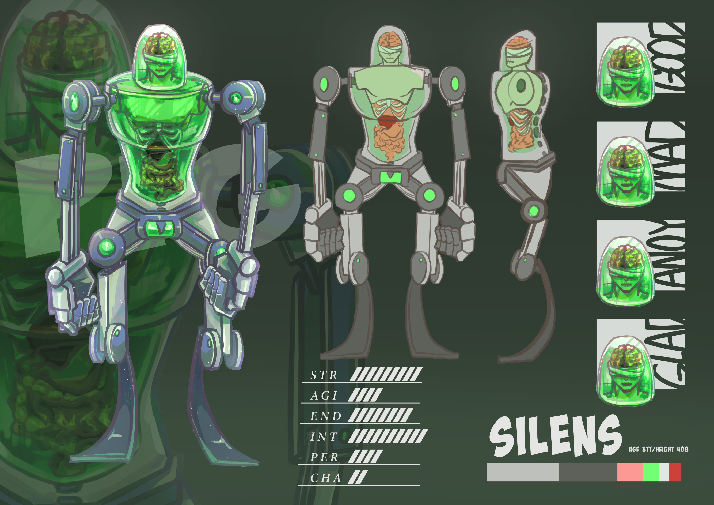
FIG. 020↗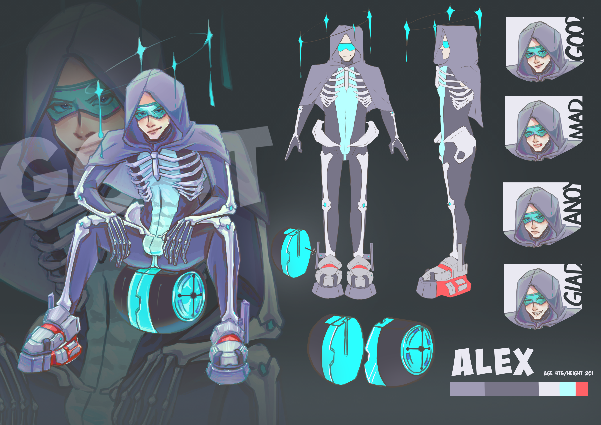
FIG. 021↗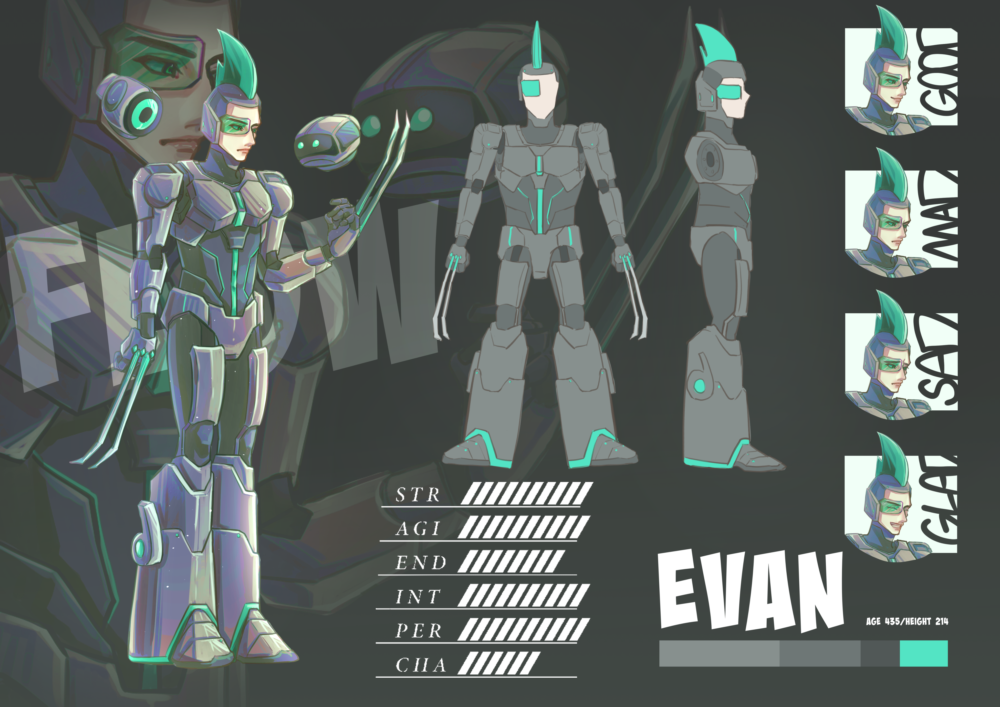
FIG. 022↗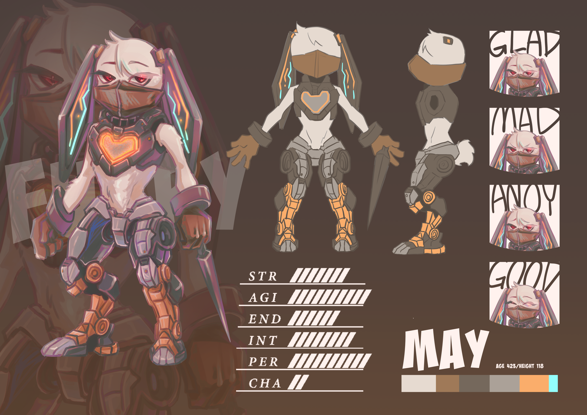
FIG. 023↗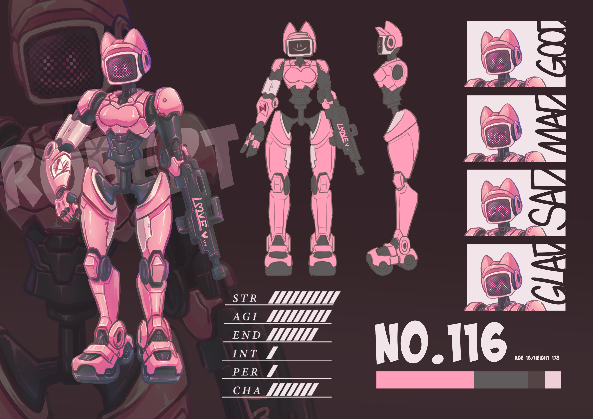
FIG. 025↗ FIG. 027↗
FIG. 027↗
 FIG. 028↗
FIG. 028↗
 FIG. 029↗
FIG. 029↗
 FIG. 030↗
FIG. 030↗
 FIG. 031↗
FIG. 031↗
 FIG. 032↗
FIG. 032↗
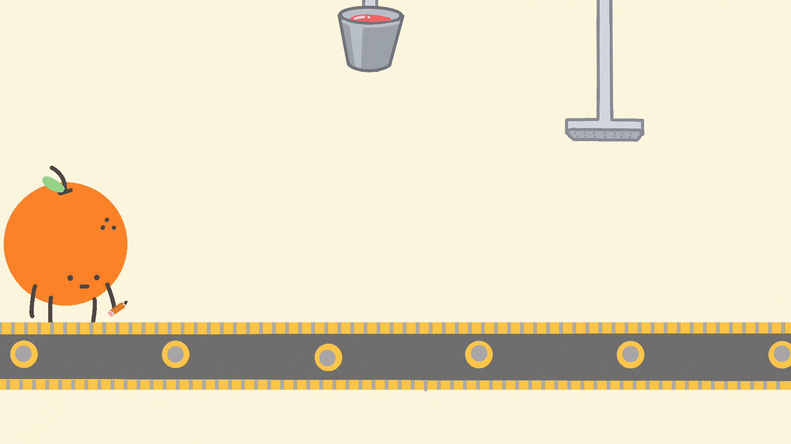
FIG. 033↗
FIG. 036
FIG. 037
FIG. 038
NO WORKS IN THIS CATEGORY YET / IN PROGRESS ↗
MORE WORKS WILL BE ADDED / IN PROGRESS ↗
A NOTE TO MYSELF / 002
MAKE IT
WEIRD.
MAKE IT ME.
DON'T POLISH THE STRANGE OUT OF IT.不必每個想法都有標準答案。
✳